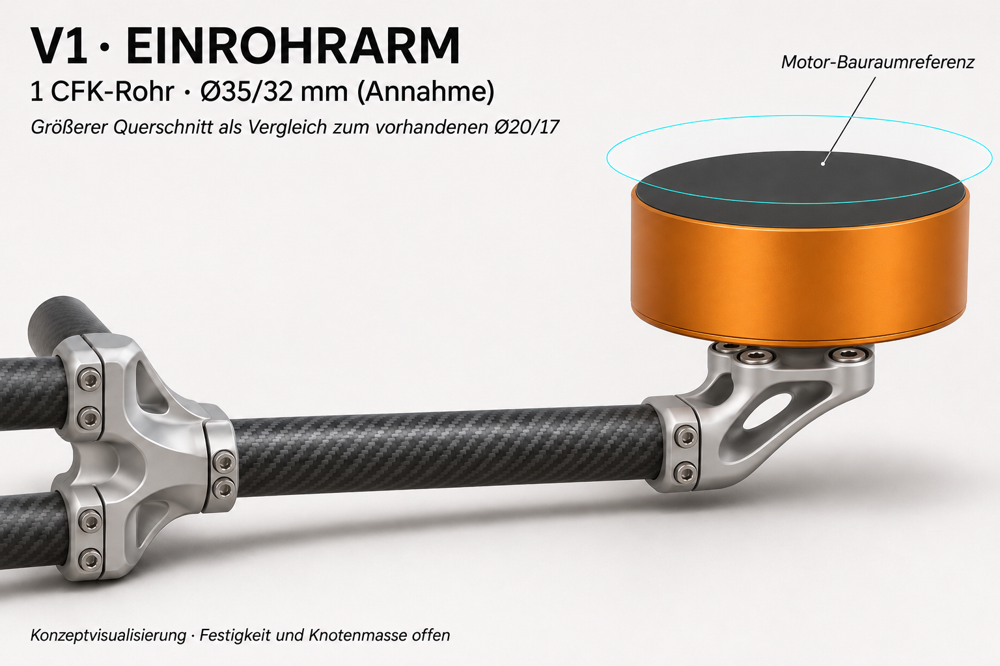
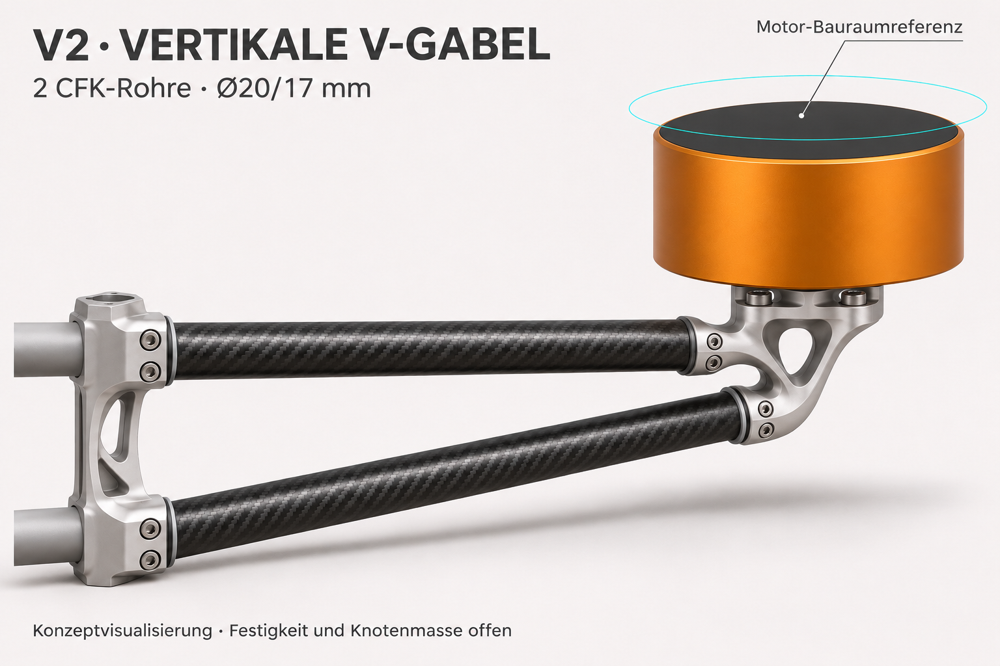
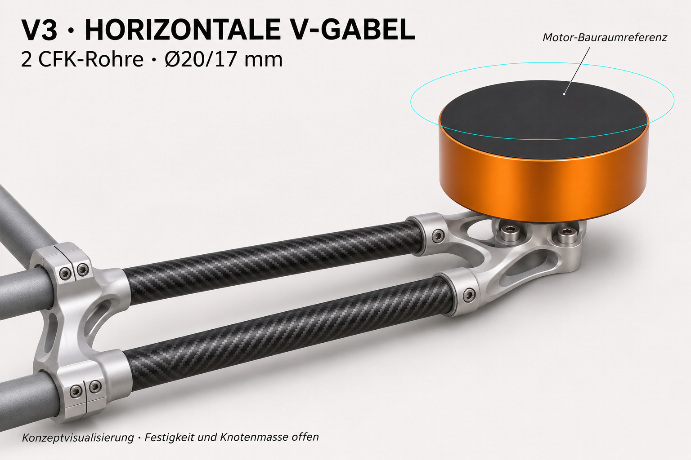
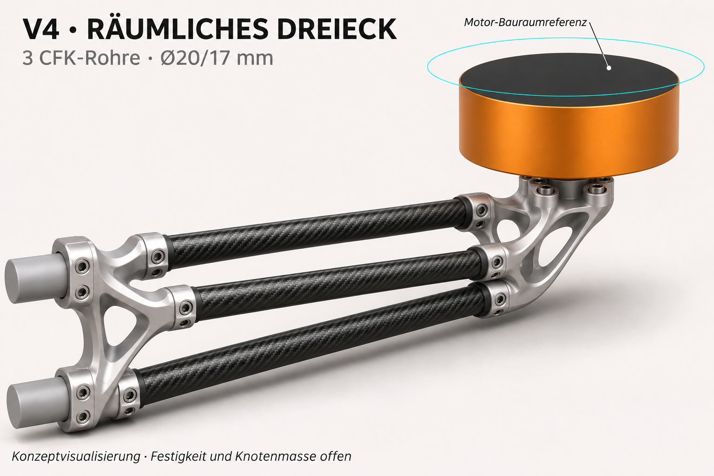
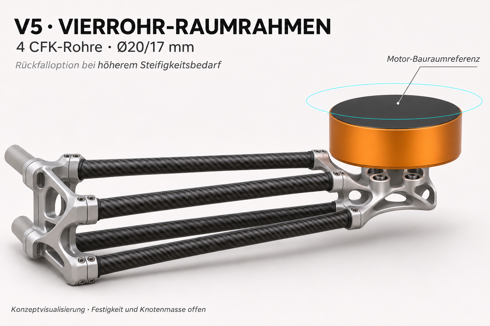

V1 · Einrohrarm

Ein größerer dünnwandiger Querschnitt mit nur zwei Rohr-Klemmstellen; erste Gewichtsoption.
Nur Rohrmasse je Arm: ca. 97 g
Neuer Rohrartikel erforderlich. Bestehendes Ø20/17 und größerer Ø35/32 werden getrennt gescreent; Laminat und Anschlüsse offen.
V2 · Vertikale V-Gabel

Zwei vorhandene Rohre übereinander; Bauhöhe als Hebelarm für die vertikale Last nutzen.
Nur Rohrmasse je Arm: ca. 108 g
Seitliche Steifigkeit, Torsion und biegesteife Klemmstellen prüfen.
V3 · Horizontale V-Gabel

Zwei vorhandene Rohre in der Draufsicht als V; kleine flache Anschlussknoten.
Nur Rohrmasse je Arm: ca. 108 g
Vertikale Biegung und Verdrehung benötigen einen eigenen Nachweis.
V4 · Räumliches Dreieck

Zwei obere und ein unteres Rohr; räumlicher Querschnitt mit direktem Dreifach-Motorknoten.
Nur Rohrmasse je Arm: ca. 162 g
Zusatzrohr und zusätzliche Klemmstellen nur bei nachgewiesenem Steifigkeitsnutzen.
V5 · Vierrohr-Raumrahmen

Vier vorhandene Rohre mit rechteckigem räumlichem Querschnitt; direkte vierfache Anschlussknoten.
Nur Rohrmasse je Arm: ca. 216 g
Schwerere Rückfalloption, nur wenn die leichteren Varianten Last/Steifigkeit nicht erreichen.
Angenommener Vergleich: 400 N Querlast, 420 mm idealisierter Kragarm, 20 Nm Torsion; Biegemodul 70 GPa, Schubmodul 5 GPa. Keine Sicherheitsfaktoren und keine geprüften Laminatwerte.
Die Rohrmasse umfasst keine Knoten, Klemmkappen, Schrauben oder Isolierlagen. Eine Rangfolge nach Gesamtgewicht ist noch nicht belegt. Der alte separate Motorträger wiegt rund 502 g je Motor; sein Wegfall ist eine Brutto-Entnahme, von der die Masse neuer Knoten abgezogen werden muss.